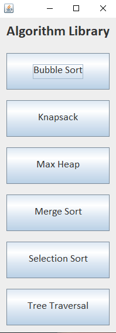

Projects
During my time at Georgia Southern University, I was acquainted with some new ideas that were not further elaborated upon during class. All of these projects, minus the packet capturer, were my own ideas that I wanted to know more about. The best way I learn is by doing, so I worked on projects that would further develop my skills and familiarity with different programming languages, messing with the build path, adding new JARs to my library, etc. Every time I get the result I am looking for I get excited to learn more. I enjoy seeing a finished product after days of working on a specific goal. These projects are some of the ones I think are the most interesting.
Packet Capturer
I have worked on a few projects that I believe showcase the skills necessary for employment. Most recently, I created a C# project that is used for packet capturing. There is a dropdown menu that lets the user select the network adapter so he/she can monitor traffic coming in. This project also allows the use of user generated ARP requests, all they need to do is select a text file with a properly formatted ARP request and the console will send it out for them. Using Wireshark, you can watch as your request is sent out. This project took a few weeks to finish, as I had never worked with packet capturing before. Regardless, I think the final version of this project turned out better than expected.

Here you can see the GUI for the packet capturer. There is a dropdown menu that allows switching between network adapters so you can monitor traffic on a specific adapter.
This is the ARP request that I wrote to send to another host. If you know the MAC address of another machine on your LAN then you can change the destination to that MAC address.
As you can see, this is the screenshot of wireshark watching multiple ARP requests go out asking who is at a certain IP address.
Key Logger
As part of my computer security class I was tasked with writing a research paper over any topic of my choice related to security. I chose to focus on researching different types of attacks that hackers might use to steal personal information. I wanted to show how easy it is to make some of these attacks, which is when I started to work on a key logger. I used Java for this project along with an extra .jar file called jNativeHook. This .jar allows this project to track whatever I type even if I am not using the IDE. This relatively simple script is meant to run in the background and record everything that a person types into a text file. That text file is then automatically sent to an e-mail every 10 minutes. I used Python to set up the e-mail automation as Python allows for e-mail registration and automatic sending. This project was a bit more in depth as I do not have as much experience with Python, and the text files can be a bit long. Overall I am happy with the result and feel as if this project deserves some acknowledgement.
This is the output of the key logger. The keys I type go into the text file that will then be sent to my e-mail using the Python script mentioned above. You may notice that there are some unkown key codes showing in the output log. I am working on fixing this error, but I still think this project is very interesting and deserves some recognition here.
This is the Java script for the log. All this does is record all of the keys typed by the user (me, in this case) and sends the console output to a notepad text file.
Here you can see the Python script for sending the email from my personal email to my school email. This works by reading the text file and setting the contents as the body of the email. You will notice that this process is inside an infinite loop that restarts every ten seconds. At the end of the countdown the email with the new logged content is sent to my student email.
Here are the emails that were sent from my personal to my student email. This just shows that the Python script works as intended.
I have not used Python a lot but I enjoyed using it for this project. It is very easy to use and I look forward to using it more in the future. I do not intend on actually using this key logger, but I did want to make it just to see if I could fully complete it. This project shows my ability to quickly pick up on new programming languages and my ability to use my resources (google) to figure new things out.
Algorithm Library
There are so many different known algorithms that work well for sorting values, finding the shortest distance from point to point, tree traversal, etc. I decided that I should make a library for the different algorithms that I find most useful for myself. It is hard to memorize every step of these algorithms so I made a GUI in NetBeans that displays a menu of different algorithms. Each option has a brief explanation of what the selected algorithm does along with the actual code for it as well. I use this as a reference for homeworks and projects. Of course I could just copy and paste the code into a new assignment and call it a day, but there are several other uses for these algorithms. What can be found in the library I have made are the most basic versions of these algorithms. The code already has default inputs that give the correct output as proof of it working. Usually I will have to edit a few things here and there to make the algorithms work the way I need them to work for a specific purpose. Regardless, I find this library to be very helpful for when I need a quick reference on how different common algorithms work.

This is the main menu of the library. It is a very basic GUI as I do not need much utility here, it is simply a reference tool for for quick access.
This is the binary tree traversal selection. When clicked from the main menu a new window opens that explains the use case for tree traversal and shows the code for traversal. There is nothing more on these pages as, again, I do not need very much utility at all.
This is one of my favorite algorithms just because I can see it being very useful to a lot of people for budgeting. The knapsack algorithm is not something I hear of very often but it is fun to play around with. I have used this a few times when buying things online, I feel like it has been the most useful "every day activity" implementation of programming for me.
I have included maxheap here to show that I am familiar with tree traversal and manipulation of binary trees. I used this a lot during my data structures course and it came in very handy for doing homeworks where max/min heap was required.
This library is an ongoing project. I plan on using it for as long as I can to keep as a toolbox for extra tricks and quick access to common algorithms. So far it has mainly been used for homework but I can definitely see this being useful in a professional setting as well.
This Website
I feel it is fair that I acknowledge this website as a project as well as I have not used HTML very much in the past. Everything I have done here has no extra addons, which is why this page may look a bit plain. I wanted to have a unique addition to my portfolio and thought it would be a cool idea to have a website that IS my portfolio. This is my first full HTML project so I am proud of the end result. This website shows off my ability to learn new things and apply them as I learn more and more, furthermore this was a great opportunity to expand my knowledge of programming as a whole. I plan to keep modifying this page as I learn more about HTML and CSS, but for now I believe the way it is now is a good starting place.
Conclusion
These are just a few of the projects I have worked on. I do not want to fill this page with lots of unneccessary scrolling, rather, I just want to put the projects on here that show I have a solid understanding of programming. I have learned so much in the past few years at my school and I am proud to present these end results to a team that can appreciate the hard work put in to come this far. I never imagined I would end up in the major I am in, but I am happy I chose this path as it has become a passion of mine that I am excited to pursue further. I appreciate your time for looking through all of this and I hope to hear from you soon!